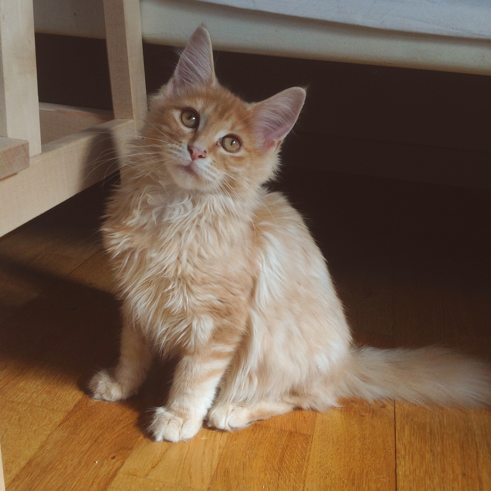
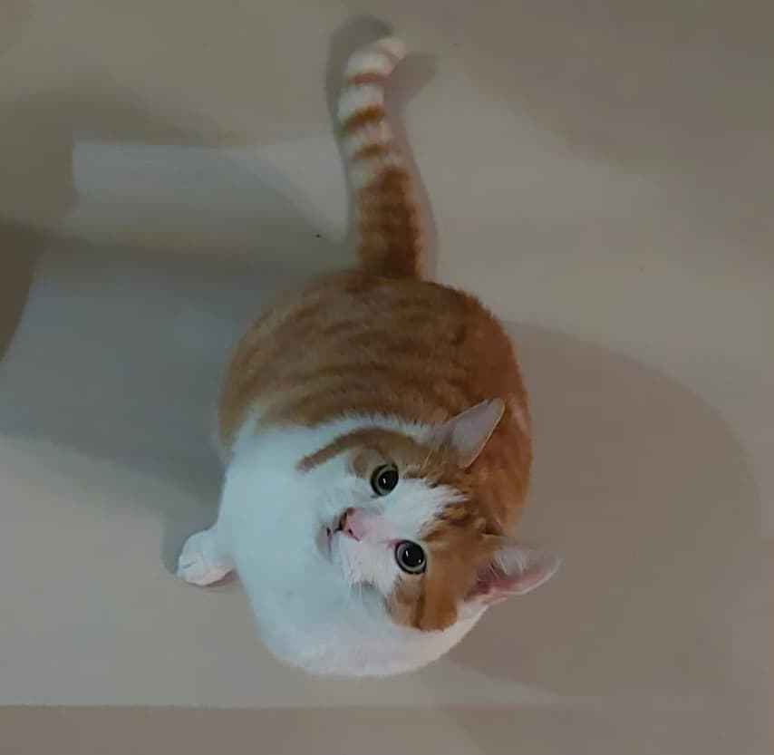
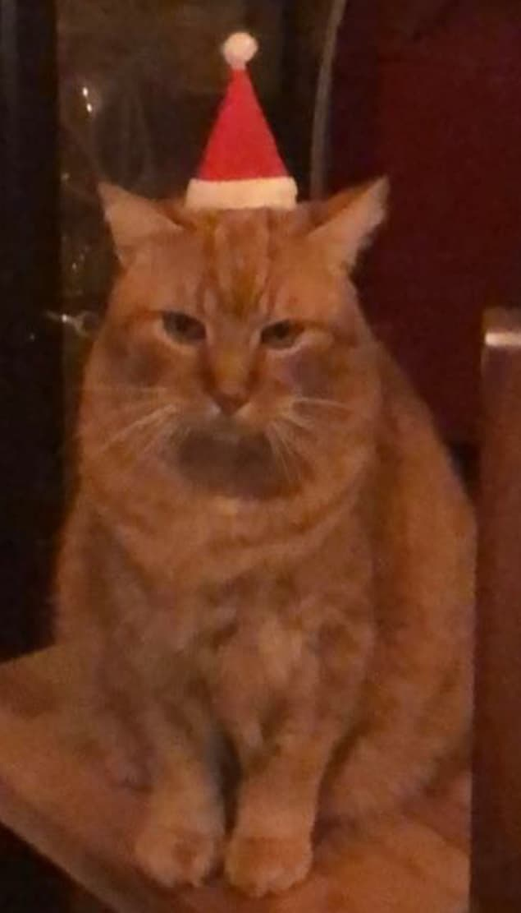
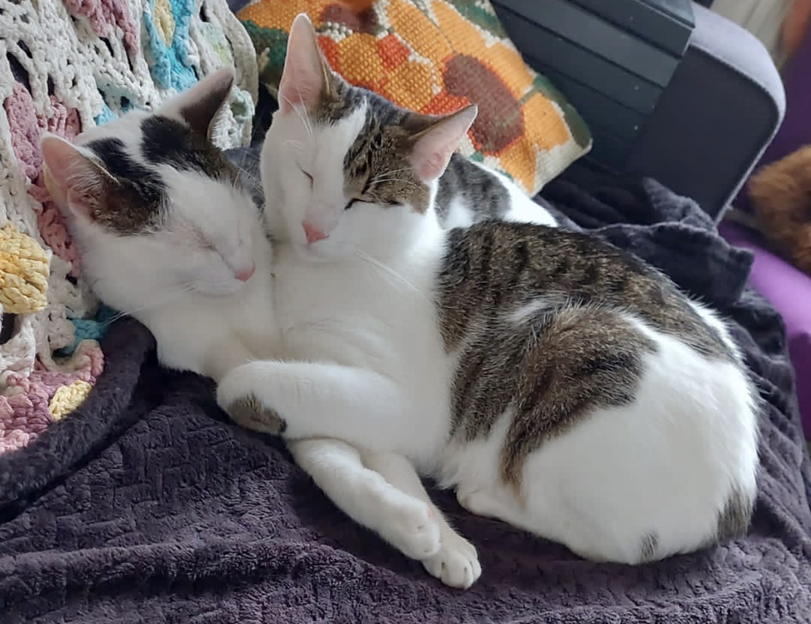

Over katten
Wat zijn katten?
Katten zijn populaire huisdieren. De huiskat stamt af van de Afrikaanse wilde kat. Een mannetjeskat noemen we een kater en een kater leeft gemiddeld 13 tot 15 jaar. Een vrouwtjeskat noemen we een poes, een poes wordt gemiddeld 2 jaar ouder dan een kater. Babykatjes noemen we kittens.
Geschiedenis van de kat
Katten zijn al lid van het gezin zolang we ons kunnen herinneren. Het zijn geweldige aanhankelijke dieren en hun grappige maniertjes zijn vermakelijk, maar hoeveel weten we eigenlijk over de geschiedenis van katten? Voor velen van ons is de oorsprong van onze katten een compleet mysterie en er is heel weinig bekend over de redenering achter bepaald gedrag.
De harmonieuze relatie tussen katten en mensen gaat terug tot het jaar 3000 voor Christus in het oude Egypte. Archeologische studies hebben bewijzen gevonden dat de Afrikaanse wilde kat de eerste voorouder is van de huiskat. Daarom treffen we vandaag de dag bij sommige traditionele bevolkingsgroepen Afrikaanse wilde katten als huisdieren aan. DNA-studies die in Zuid-Afrika zijn uitgevoerd, zijn er niet in geslaagd om een onderscheid te maken tussen de huiskat en de Afrikaanse wilde kat. Terwijl de Europese wilde kat vaak beschouwd wordt als een belangrijk element in de ontwikkeling van de huiskat, is die duidelijk te onderscheiden van de andere twee.
Gedrag & verzorging

Veel mensen denken dat katten zich prima redden alleen thuis. Het is een veel gehoorde reden om voor een kat als huisdier te kiezen. Maar als je kijkt naar het natuurlijke gedrag van de kat, dan zie je dat katten eigenlijk hele sociale dieren zijn. In de vrije natuur leven katten in kolonies die bestaan uit een moederpoes met haar vrouwelijke nakomelingen en hun kittens. Katers verlaten de kolonie als ze in de puberteit komen. Dan gaan ze de hort op om bij andere kattengroepen hun genen te verspreiden. Als een kat thuis alleen leeft en niet de mogelijkheid heeft om buiten soortgenoten tegen te komen, kan de kat dit sociale contact missen en kan er eenzaamheid ontstaan. De meeste katten hebben dus een vorm van sociaal contact met soortgenoten nodig. Dat betekent niet dat ze perse met meerdere samen gehouden moeten worden. Bij voorkeur vinden ze dat contact buiten, bijvoorbeeld bij de buurtpoezen. Een kat die binnen en alleen wordt gehouden en helemaal geen contact kan hebben met andere katten, wordt in zijn natuurlijke behoeftes tekort gedaan. Dat kan leiden tot stressvol gedrag van de kat.
Aan de oren van een kat kun je aflezen hoe hij zich voelt. Wanneer een kat zijn oren opsteekt, let hij op. Als hij zijn oren naar achteren draait, is hij geërgerd en als hij zijn oren in zijn nek legt, is hij bang. Ook aan de stand van zijn staart kun je zien hoe de kat zich voelt. Als de kat zijn staart overeind houdt, groet hij andere katten of mensen. Als de kat zijn staart iets omlaag houdt is hij tevreden en ontspannen. Als een kat bang is, hangt zijn staart naar beneden. De staart is heel belangrijk voor een kat, hiermee houdt hij zichzelf in evenwicht bij het klimmen en springen. Katten vinden het vaak niet prettig om aangestaard te worden. Ze zien dit als een bedreiging. Knipperen met de ogen helpt daartegen. De ene kat heeft meer verzorging nodig dan de andere. Zo moeten langharige katten eenmaal per dag geborsteld, terwijl kortharige katten prima hun eigen vacht kunnen verzorgen. Katten kunnen het beste ieder jaar gecontroleerd worden door de dierenarts. De dierenarts kijkt dan naar het gewicht van de kat, de oren, het gebit, het hart en andere gezondheidskenmerken. Katten die buiten komen, hebben vaker last van vlooien en daarom moeten katten ook regelmatig ontvlooid (en ontwormd) worden. De dierenarts geeft hier altijd advies over.
Kattenrassen
De Maine Coon
Wist je dat de Maine Coon een van de populairste kattenrassen in Nederland is? Maine Coons zijn populair omdat ze vaak rustig zijn en behoren tot de grootste katten ter wereld! Het zijn speelse, vriendelijke katten die snel gehecht zijn aan hun baasje. En misschien onverwacht: ze zijn fan van water. Waar ze precies vandaan komen weet niemand, maar we weten wel dat je ze wilt hebben!
De blauwe Rus
De Blauwe Rus is eigenlijk echt een typische kat. Ze doen precies waar ze zelf zin in hebben. Soms willen ze complete rust en hebben ze een hekel aan veel geluid en drukte. Maar soms komen ze tot leven en zijn ze ontzettend speels en sportief. De Blauwe Rus vindt zichzelf heel onafhankelijk en heeft volgens zichzelf geen baasje nodig. Maar goed, wie moet ze dan eten geven?
De Noorse Boskat
De Noorse Boskat wint populariteit in Nederland. De kat ziet er super stoer uitziet door het halflange haar in veel verschillende kleuren. Ben je op zoek naar een ontzettend nieuwsgierige, speelse en vriendelijke kat? Dan is dit je kat! De Noorse Boskat is ook nog een rustig en tolerant naar mensen en dieren.
De Heilige Birmaan
De Heilige Birmaan is een vriendelijke raskat en is een echt gezelschapsdier. De Heilige Birmaan heeft een mooi uiterlijk met “point”-tekeningen en opvallende witte voeten. In Nederland wordt dit ras veel gehouden en dat is niet gek!
Kattenrassen van Broes
De Britse Korthaar
Kort haar? Check. Stevig gebouwd? Check. Sociaal? Check. Dat is de Brits Korthaar. De Brits Korthaar is zoals de naam al doet vermoeden een Engels ras waar hij tegen het einde van de 19e eeuw gefokt werd door de kleur en tekeningen in de vacht. Net als de Maine Coon behoort de Brits Korthaar tot een van de populairste rassen van Nederland om zijn makkelijke en sociale karakter.
De Europese Korthaar
De Europees korthaar wordt vaak vergeleken met de huis-tuin-en-keuken-kat. Er zijn dan ook veel overeenkomsten in karakter en uiterlijk. De Europees korthaar heeft een erg makkelijk karakter. Hij heeft een zachtaardig karakter en is erg speels en actief.
Waarom een kat als huidier?
 Een kat vermindert de kans op een hartaanval; Uit onderzoek van de Universiteit van Minnesota blijkt dat mensen met een kat 30% minder kans hebben op een hartaanval dan mensen zonder kat. Daarnaast liet een soortgelijke studie in 2009 zien dat mensen met een kat minder risico lopen om te overlijden aan hart- en vaatziekten.
Een kat vermindert stress. Heb je veel last van stress? Dan kan een kat hier een positieve invloed op hebben. Een kat zorgt er namelijk voor dat je minder stress ervaart. Door een kat als huisdier te hebben ervaar je hoe het is om een maatje te hebben die er dagelijks voor je is. Bovendien heb je iemand om voor te zorgen én om mee te knuffelen. Een kat maakt je over het algemeen dus vrolijker en relaxter.
Een kat als huisdier is goed voor kinderen. Uit verschillende onderzoeken is gebleken dat kinderen die opgroeien met een huisdier minder allergieën ontwikkelen. Kinderen die opgroeien in een ultraschone omgeving zullen later sneller allergieën krijgen. Daarnaast ontwikkelen kinderen meer empathie wanneer ze opgroeien met een huisdier om zich heen. En niet geheel onbelangrijk: ze leren omgaan met verantwoordelijkheid én ze ontwikkelen meer zelfvertrouwen.
Katten laten je minder eenzaam voelen. Toegegeven, katten laten niet op dezelfde enthousiaste manier als honden zien dat ze blij zijn als je na een lange (werk)dag thuiskomt. Maar dat ze blij zijn om je weer te zien is wel degelijk zo. Net als andersom waarschijnlijk. Uit onderzoek van de Universiteit van Miami blijkt zelfs dat de aandacht van een kat dezelfde sociale behoeftes vervult als bankhangen met een vriend(in).
Een kat helpt tegen depressies.Uit onderzoek onder 600 mensen – van wie de helft kampte met psychische problemen – naar de invloed van huisdieren op hun gemoedstoestand blijkt dat 87% van de ondervraagden het gevoel had dat het hebben van een kat een positieve impact op hun humeur had. Daarnaast vond 76% het makkelijker om de dagelijkse routine vast te houden door hun huisdier.
Katten zorgen ervoor dat je vaker lacht. Goed, als je écht vaak wil lachen moet je volgens onderstaand onderzoek eigenlijk een hond of een hond én kat hebben, maar het staat hoe dan ook vast dat katten je óók vaak aan het lachen maken met hun sullige acties en hun lieve maniertjes. Uit onderzoek van Robin Maria Valeri, dat in 2015 in Society & Animals verscheen, blijkt dat honden- en kattenbezitters namelijk vaker en meer lachen dan mensen zonder hond of kat. Dit verslag is gebaseerd op een enquête waarbij vier groepen bijhielden hoe vaak ze op een dag moesten lachen. De eerste groep bestond uit hondenbezitters, de tweede uit kattenbezitters, de derde uit mensen met een hond én een kat en de vierde uit mensen zonder huisdieren. Hieruit bleek dat hondenbezitters en baasjes met een hond én een kat vaker lachen dan de andere twee groepen.
Door katten ervaar je minder angst en verdriet Heb je geen kat? Dan kun je natuurlijk ook gewoon leuke kattenfilmpjes kijken. Je lacht dan niet alleen vaker, maar het zorgt er volgens onderzoeker Jessica Myrick ook voor dat je je minder angstig en verdrietig voelt na het kijken van een kattenfilmpje. En... positieve emoties zoals hoop, geluk en tevredenheid namen zelfs toe!